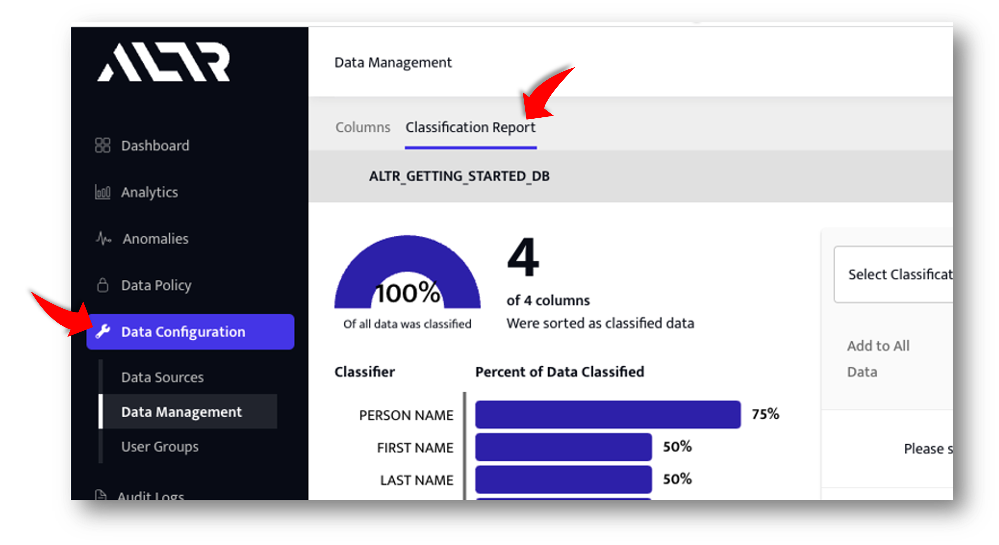
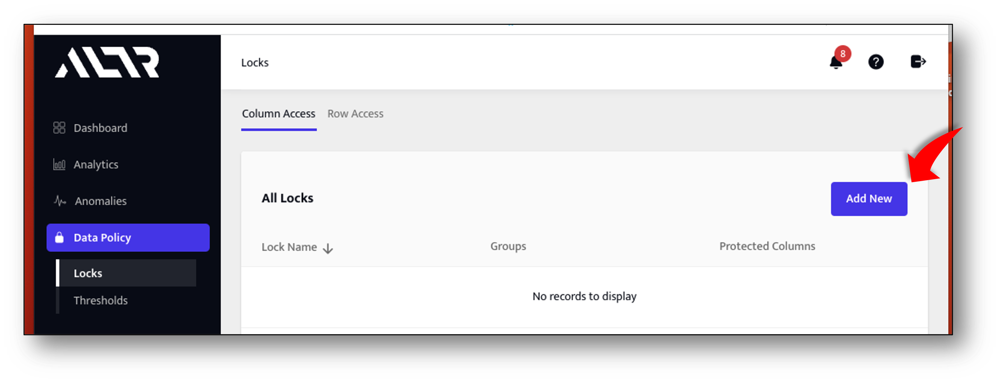

This Quick Start Guide is intended for Data Owners and Data Stewards or any other role responsible for securing sensitive data in your Snowflake data warehouses. Its purpose is to demonstrate how ALTR automates data governance.
Prerequisites
- A Snowflake Enterprise Edition account (or higher).
- We recommend that you sign up for a free Snowflake Trial
- You need to be, or have access to, an ACCOUNTADMIN for your Snowflake instance.
What You'll Learn
- You will learn how to use ALTR to secure sensitive data in Snowflake with role based masking policies.
What You'll Build
- A role based data access policy for Snowflake that is automatically enforced by ALTR.
Create a sample database
- To create the sample database run the following SQL in a SQL worksheet:
-- Use ACCOUNTADMIN role
USE ROLE ACCOUNTADMIN;
-- Create Sample Database
CREATE DATABASE ALTR_GETTING_STARTED_DB;
-- Set DB Context
USE DATABASE ALTR_GETTING_STARTED_DB;
-- Populate Sample database from Snowflakes shared sample database.
-- Usually named: SNOWFLAKE_SAMPLE_DATA
CREATE TABLE SAMPLE_CUSTOMER AS
SELECT
C_FIRST_NAME,
C_LAST_NAME,
C_EMAIL_ADDRESS,
C_BIRTH_COUNTRY
FROM SNOWFLAKE_SAMPLE_DATA.TPCDS_SF10TCL.CUSTOMER
LIMIT 10000;
Create a new ALTR Account
- Log in to your Snowflake instance and go to the Partner Connect page. If you need help finding Partner connect open this link in a new tab: Connecting with a Snowflake Partner.
- Type "ALTR" in the search bar and then click on the "ALTR" card.

- Follow the prompts. When you see the screen above click the "Activate" button. This will take you out of Snowflake Partner connect and into the ALTR portal Password Setting Screen
Set your ALTR Password and run ALTR Setup Wizard

- Enter your password
- Accept Terms and Conditions
- Click "Set Password" Button
- Follow the prompts in the ALTR Setup Wizard (there are multiple steps).
Log in to Snowflake and run the ALTR Stored Procedure
- Log in to the Snowflake instance that has already been associated with an ALTR account
- Create a new worksheet
- The stored procedure grants ALTR access to the newly created sample database
- Call the ALTR setup stored procedure as an ACCOUNTADMIN as follows
CALL "PC_ALTR_DB"."PUBLIC"."SETUP_ALTR_SERVICE_ACCOUNT"(TRUE);
CALL "PC_ALTR_DB"."PUBLIC"."SETUP_ALTR_SERVICE_ACCOUNT"(FALSE);
Connect ALTR to Sample Database
- Log in to your ALTR portal
- Navigate to "Data Configuration -> Data Sources"
- Click on the "Add New" button
- Fill in the required fields:
- Data Source Name: A friendly name for the datasource, we recommend using the actual database name
- Snowflake Host Name: url for snowflake account where this database resides.
- Service Account ID: ‘PC_ALTR_USER' if ALTR account created via Snowflake Partner Connect
- Snowflake Database Name: Name given to the sample database (ALTR_GETTING_STARTED_DB)
Start the data classification job
- In the ALTR portal navigate to Data Configuration -> Data Sources
- Open the settings panel for the ALTR_GETTING_STARTED_DB database by clicking on it in the list of databases
- Scroll down to Data usage and classification section of the settings panel and check the Tag data by classification checkbox

- Click the Tag Type drop down and choose Google DLP Classification
- Click the Update Button to save the settings. ALTR will start the classificaton process. You will receive an email when the process is completed. Wait until the classificaton job is complete before moving on. It should take only a few minutes.
View the classification report
- Navigate to Data Configuration -> Data Management page.
- Click on the Classification Report tab. 
Tell ALTR to start "Following" the C_EMAIL_ADDRESS column
- Choose EMAIL_ADDRESS from the dropdown on the right hand side of the classification report.

- Click the Add Data button for the C_EMAIL_ADDRESS column to have ALTR follow this column.
Create a policy defining what Snowflake roles will view email addresses unmasked
- Navigate to Data Policy -> Locks page in ALTR portal
- Click the Add New button and fill in the form as follows:
- For the lock name enter Email Unmasked
- Click the User Groups dropdown and check SECURITYADMIN
- Under the Policy Section there should be an empty tag/column form. Fill it in as follows:
- Click the Tag tab (not the Column tab)
- Select EMAIL_ADDRESS from the Tag dropdown
- Select No Mask from the Masking Policy dropdown
- Click the Update Lock button to save this lock.

Create a policy defining which Snowflake roles will view email addresses partially masked
- on the same Locks page click the Add New button and fill in the form as follows:
- For the lock name enter Email Partially Masked
- Click the User Groups dropdown and check SYSADMIN and ACCOUNTADMIN
- Under the Policy Section there should be an empty tag/column form. Fill it in as follows:
- Click the Tag tab (not the Column tab)
- Select EMAIL_ADDRESS from the Tag dropdown
- Select Email Mask from the Masking Policy dropdown
- Click the Update Lock button to save this lock.
Create a policy defining which Snowflake roles will view email addresses fully masked
- on the same Locks page click the Add New button and fill in the form as follows:
- For the lock name enter Email Fully Masked
- Click the User Groups dropdown and check PUBLIC
- Under the Policy Section there should be an empty tag/column form. Fill it in as follows:
- Click the Tag tab (not the Column tab)
- Select EMAIL_ADDRESS from the Tag dropdown
- Select Email Mask from the Masking Policy dropdown
- Click the Update Lock button to save this lock.
Copy test SQL into a new worksheet.
Copy the SQL code below into a new worksheet. This sheet has commands and queries we will use to test the policies you just created. The first section grants access to the sample database for the SYSADMIN, SECURITYADMIN, and PUBLIC roles. The next section is a series of tests that show ALTR enforcing policy based on a users Snowflake role.
--
-- Grant access to the sample database to our test roles:
--
use database ALTR_GETTING_STARTED_DB;
use role accountadmin;
grant select on table SAMPLE_CUSTOMER to role SECURITYADMIN;
grant usage on database ALTR_GETTING_STARTED_DB to role SECURITYADMIN;
grant usage on schema PUBLIC to role SECURITYADMIN;
grant usage on warehouse COMPUTE_WH to role SECURITYADMIN;
grant select on table SAMPLE_CUSTOMER to role SYSADMIN;
grant usage on database ALTR_GETTING_STARTED_DB to role SYSADMIN;
grant usage on schema PUBLIC to role SYSADMIN;
grant usage on warehouse COMPUTE_WH to role SYSADMIN;
grant select on table SAMPLE_CUSTOMER to role PUBLIC;
grant usage on database ALTR_GETTING_STARTED_DB to role PUBLIC;
grant usage on schema PUBLIC to role PUBLIC;
grant usage on warehouse COMPUTE_WH to role PUBLIC;
-- warehouse
use COMPUTE_WH;
-- *** END OF GRANT ACCESS section ***
--
-- ALTR Policy Tests:
--
-- SECURITYADMIN gets to see emails with no masking at all:
use role SECURITYADMIN;
select * from SAMPLE_CUSTOMER;
-- SYSADMIN and ACCOUNT admin domain portion of emails only, email name portion is masked
use role SYSADMIN;
select from SAMPLE_CUSTOMER;
use role ACCOUNTADMIN;
select from SAMPLE_CUSTOMER;
-- PUBLIC sees emails fully masked
use role PUBLIC;
select * from SAMPLE_CUSTOMER;
-- Now go into the ALTR portal and make the following changes
-- 1. remove the PUBLIC role from the fully masked lock,
-- 2. add the PUBLIC role to the partially masked lock.
-- Run query as PUBLIC role again and observe that moving the role into the
-- partially masked lock instantly updates access for that role
use role PUBLIC;
select * from SAMPLE_CUSTOMER;
-- See what happens when a role is not associated with any policy. Do this by going
-- into the ALTR portal and unselecting the PUBLIC role from the partially masked lock.
-- Make sure that the PUBLIC role is not a part of any other lock.
--
use role PUBLIC;
select * from SAMPLE_CUSTOMER;
Run the Grant Portion of SQL
- In the worksheet you created above hilight the commands from the top through to the comment labeled: – *** END OF GRANT ACCESS section *** This will grant access to the sample database for our test roles.
Run the policy tests
- There are six pairs of test commands. The first command to set the correct role and then the query.
- Run each policy test query one at a time and check that the results are what is expected. We've put comments in front of each pair to remind you what we configured in the policy.
What we covered:
- How to set up a Free ALTR Account and connect it to a Snowflake Database
- Generating and Using ALTR's integrated classification report to identify sensitive data.
- Creating automatically enforced, role based, data access policy for sensitive data
- Tested ALTR's role based data access enforcement live by querying from Snowflakes Snowsight user interface.
Ideas for exploring futher:
- Use any client or method to connect to Snowflake and query the sample database we just protected with ALTR. You will see that ALTR enforces your policy in the same way no matter how the data is accessed. From Snowflakes web ui, through any connector, driver or Method Snowflake supports (Go, Python, JDBC, REST API, Snowpark, .NET, Node.js, ODBC etc... )
Getting Help:
- If you need help on this or another Quickstart email us at support@altr.com (put ‘quickstart help' in the subject line please) and somebody will reach out to you.